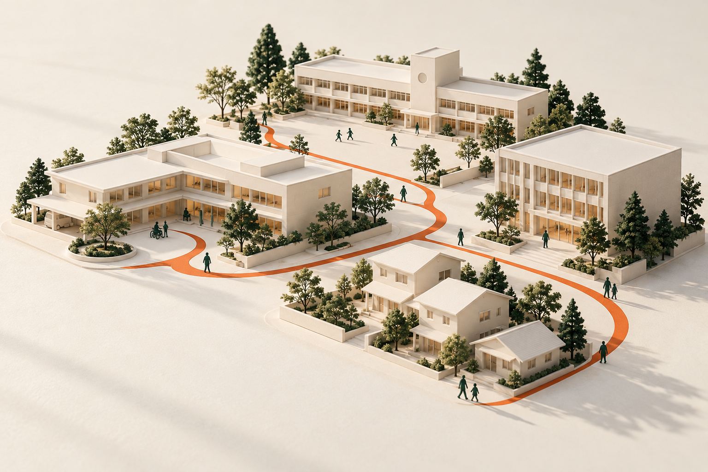

防災・BCP・危機対応支援
備えを、
動ける力に。
守りたい日常がある。
だから、いざというときに動ける備えを。
BCPの策定から研修・訓練、継続的な改善まで。
人と組織の「そのとき」を、ともにデザインします。

01 OUR APPROACH
その計画は、
現場で動きますか。
「作った」から、その先へ。
マニュアルはある。でも、担当者が不在だったら。
夜間の少人数体制だったら。想定と違うことが起きたら。
ソナエデザインが大切にするのは、現場で使えること。
組織の状況に合わせて計画を整え、訓練で確かめ、
見つかった課題を次の備えにつなげます。
WHY NOW
備えが、
組織の力になる時代。
災害時にも、大切な業務を続けるために。
地震や風水害、感染症など、不測の事態への備えには、計画と日常的な運用が必要です。中小企業庁の指針でも、BCPの策定に加え、教育・訓練や計画の見直しが位置づけられています。
中小企業庁｜BCP策定運用指針介護の現場には、計画・研修・訓練を。
介護サービス事業者には、業務継続計画の策定、研修、訓練等が義務づけられています。実施した記録と、そこで見つかった改善点を積み重ねることも大切です。
厚生労働省｜介護保険事業の基本指針01PLAN & REVIEWBCP・マニュアル策定／改善
現場に合う計画と、使いやすい手順に。
既存資料と現場の状況を確認し、優先業務、初動、役割分担、連絡・引き継ぎを整理。新規策定にも、既存BCPの見直しにも対応します。
- 現状のヒアリング・課題整理
- BCP・対応マニュアルの策定と改訂
- 初動チェックリスト・役割分担の整理
02LEARN職員研修
知識を、自分の役割に結びつける。
新任職員、現場リーダー、管理者など、対象者に合わせて構成。防災・危機対応の基本から、自組織のBCPや役割を理解する研修まで設計します。
- 職員向け防災・危機対応の基礎研修
- 管理者・リーダー向けの役割確認
- BCPの周知と、実践につながるワーク
03SIMULATE机上訓練
判断と連携を、対話で確かめる。
災害や危機の状況を段階的に提示し、「誰が、何を、どの順番で行うか」を確認。判断に迷う場面や情報共有の課題を見つけます。
- 施設・業務に合わせたシナリオ設計
- 訓練進行と判断・連携の振り返り
- 課題の整理と改善事項の明確化
04PRACTICE実践訓練
実際の場所で、動きと手順を検証する。
地震・火災・風水害などの災害や、施設で想定する危機を題材に、連絡・避難・役割分担などを実際に動いて確認します。安全管理と施設条件を踏まえて内容を調整します。
- 目的・想定・安全管理を含む訓練計画
- 現場での行動・連携の確認
- 観察結果の共有と手順の見直し
05SHARE講師・研修登壇
参加者に届くテーマと、持ち帰れる学びを。
法人・施設・団体の勉強会や研修会など、主催者の目的、参加者、時間に合わせてテーマと構成を相談。講演とワークを組み合わせた内容も検討します。
- 防災・BCP・危機対応に関する講演
- 組織内研修・団体向け勉強会
- 目的に応じた参加型ワーク
06CONTINUE月額・年間顧問
担当者だけで抱えず、備えを更新し続ける。
計画の定期点検、年間の研修・訓練設計、実施後の改善相談などを継続的に支援。支援範囲、頻度、連絡方法を事前に決めて進めます。
- BCP・マニュアルの定期点検
- 年間研修・訓練計画の相談
- 体制変更や訓練結果を踏まえた改善
03 OUR PRODUCT
現場の対応を支えるWebアプリACTION OS.
次の行動と、その記録を。
ひとつの画面で。
事象に応じた行動の確認から、担当・時刻・メモの記録まで。対応中の情報をひとつの事案にまとめ、振り返りにつなげます。
- 1事案を1ページで確認・記録
- 実対応と訓練を分けて利用
- 端末への保存・書き出し・印刷
別タブでアプリが開きます。お試しの際は、ホームの「訓練する」からご利用ください。

利用範囲と、導入前に確認したいこと
成人の救命対応、火災・地震・大雨／浸水の初動手順と記録機能を備えています。不審者・行方不明・停電などは記録機能のみです。小児・乳児の専用救命手順は未実装です。
記録は利用端末のブラウザー内に保存され、クラウド同期はありません。施設固有の手順・避難経路・役割分担の確認、適切な研修や訓練と組み合わせてご利用ください。専門機関による監修・認証を取得したものではありません。
HOW WE WORK
一度きりで終わらない、
備えのサイクル。
状況に合わせて、必要な支援を組み合わせます。
- 01 / LISTEN
知る
現場の体制、既存の計画、
困っていることを整理。 - 02 / DESIGN
整える
優先事項を決め、
計画と手順を具体化。 - 03 / PRACTICE
確かめる
研修・訓練を通じて、
実際の動きと判断を確認。 - 04 / IMPROVE
育てる
見つかった課題を反映し、
次の備えに更新。
04 SONAE JOURNAL
日常から、備えを考える。
まずは、ひとつの気づきから。
暮らしの備えから、組織の備えまで。
SUPPORT INFORMATION
補助金・公的支援使える支援制度も、確認しておきたい。
BCPや防災対策を進める際は、所在地・法人種別・投資内容に合う公的支援を確認しましょう。制度によって対象経費や申請時期が異なります。
BCP実践促進助成金
策定したBCPの実践に必要な備蓄品・設備等の導入を支援する制度です。社会福祉法人・医療法人などは対象外。BCP策定等の前提条件があり、ソナエデザインへの相談・研修費が対象になると案内するものではありません。
2026年10月20日確認時点では第2回受付終了。今後の受付・要件は公式案内をご確認ください。
東京都中小企業振興公社の案内を見る地域・年度によって制度が変わります。採択・助成を保証するものではありません。契約・発注の前に、実施機関の最新の募集要項をご確認ください。
FAQ
よくあるご質問
BCPがすでにあっても相談できますか？
はい。既存のBCP・マニュアルを確認し、現状との違いや訓練で見つかった課題を踏まえて、改善内容を検討します。
研修や訓練だけでも依頼できますか？
単独の研修・机上訓練・実践訓練、講師登壇から相談できます。目的、対象者、時間、実施場所に応じて内容を組み立てます。
料金や対応地域はどのように決まりますか？
支援内容、参加人数、準備・実施時間、訪問の有無などを確認して個別にお見積もりします。実施地域やオンライン対応の可否も、案件ごとに相談して決定します。
顧問契約には何が含まれますか？
定期相談、計画の点検、年間研修・訓練計画、実施後の改善などから必要な支援を設計します。訪問回数、研修実施、緊急時対応を含むかどうかは、契約前に範囲を明確にします。
05 LET'S DESIGN READINESS
あなたの現場の
「これからの備え」を。
まだ課題が整理できていなくても、大丈夫。
今ある計画や、気になっていることから始めましょう。
メールアドレス・受付方法は、準備が整い次第このページでご案内します。